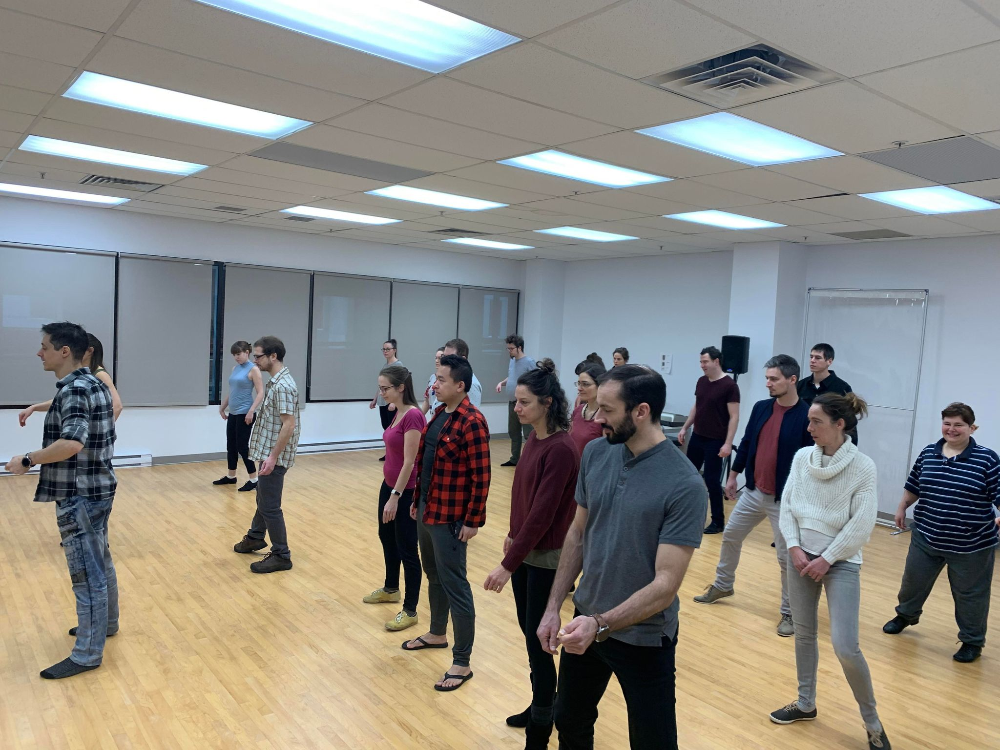

Débuter
Pour installer des bases solides, comprendre les rôles, développer le rythme et gagner en confiance dès les premiers cours.
Cours privés à Québec
Les cours privés permettent de progresser avec un accompagnement personnalisé, que tu débutes complètement ou que tu veuilles raffiner ta technique en West Coast Swing, Zouk brésilien ou Blues.
Le format
Un cours privé permet d'adapter le contenu à tes besoins: apprendre les bases, corriger une difficulté, travailler la connexion, clarifier une technique ou préparer une meilleure aisance en danse sociale.
Le contenu peut être bâti autour d'un style précis ou d'un objectif transversal: musicalité, posture, guidage, réponse, confort, créativité, rythme ou qualité de mouvement. C'est le format le plus efficace pour recevoir des retours directs et personnalisés.

Pour qui?
Débuter
Pour installer des bases solides, comprendre les rôles, développer le rythme et gagner en confiance dès les premiers cours.
Raffiner
Pour travailler une difficulté précise, améliorer la connexion, clarifier une technique ou rendre la danse plus confortable.
Accélérer
Pour les danseurs qui veulent progresser plus rapidement avec des corrections directes et un plan de pratique concret.
Styles et professeurs
Connexion élastique, musicalité, guidage, variations et aisance en social.
Fluidité, mouvement organique, posture, sécurité et qualité de connexion.
Rythme, présence, connexion, poids du corps et expression musicale.
Questions fréquentes
Le tarif est de 60 $ / h.
Oui. Tu peux prendre un cours privé seul, en couple ou avec une autre personne selon le type de travail souhaité.
Si tu hésites, écris-nous avec ton expérience et tes objectifs. On pourra te guider vers le style ou le format le plus pertinent.
Progression personnalisée